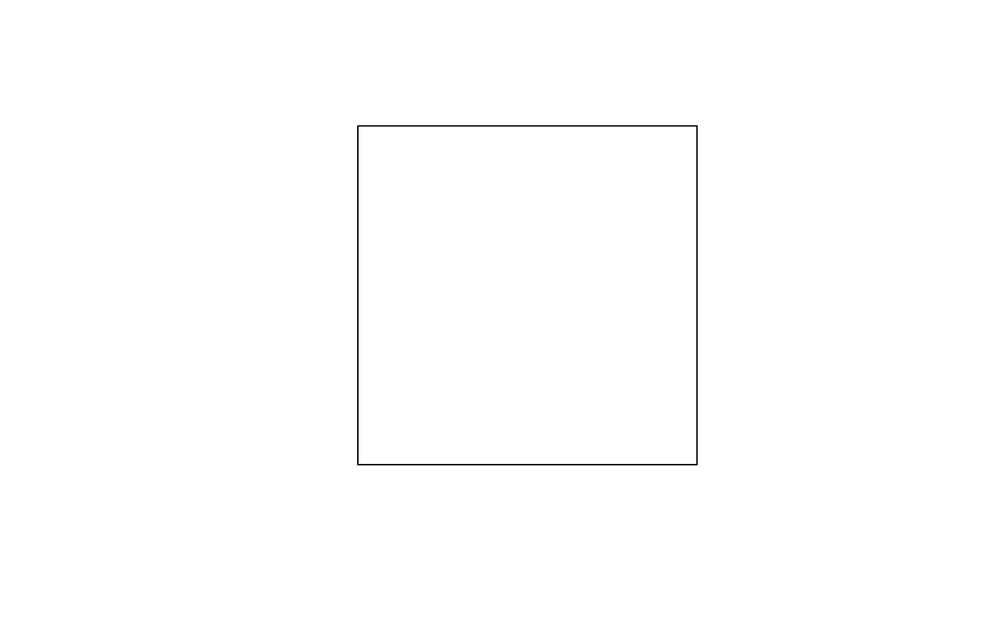

Read a .poly file.
read_poly(input, crs = "OGC:CRS84", ...)Character vector representing a polygon object saved using the
.poly format. Can be also a path to a file or a URL pointing to a valid
.poly file.
The Coordinate Reference System (CRS) of the input polygon.
Further arguments passed to readLines() (which is the function
used to read external .poly files).
A sfc_MULTIPOLYGON/sfc object.
The Polygon Filter File Format (.poly) is defined
here.
The code behind the function was inspired by the parse_poly function
defined
here.
Geofabrik stores the .poly files used
to generate their extracts. Furthermore, a nice collection of exact-border
poly files created from cities with an OSM Relation ID is available in this
git repository on github: https://github.com/jameschevalier/cities.
The default value for the crs argument is "OGC:CRS84" instead of "4326"
or "EPSG:4326" since, by definition, the coordinates are provided as
"longitude, latitude" (but these differences should be relevant only when
sf::st_axis_order() is TRUE).
toy_poly <- c(
"test_poly",
"first_area",
"0 0",
"0 1",
"1 1",
"1 0",
"0 0",
"END",
"END"
)
(out <- read_poly(toy_poly))
#> Geometry set for 1 feature
#> Geometry type: MULTIPOLYGON
#> Dimension: XY
#> Bounding box: xmin: 0 ymin: 0 xmax: 1 ymax: 1
#> Geodetic CRS: WGS 84
#> MULTIPOLYGON (((0 0, 0 1, 1 1, 1 0, 0 0)))
plot(out)

if (FALSE) {
italy_poly <- "https://download.geofabrik.de/europe/italy.poly"
plot(read_poly(italy_poly))}